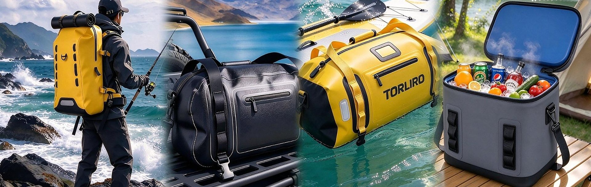

Motorcycle Cargo Bag
A rack-mounted cargo bag for bikes that leave the tarmac. Welded seams and a reinforced base keep camp gear dry through wind and rain, and the shape stays rigid when the bike is packed for a week.

Roof, rack and trunk storage for vehicles that leave the tarmac.
A rack-mounted cargo bag for bikes that leave the tarmac. Welded seams and a reinforced base keep camp gear dry through wind and rain, and the shape stays rigid when the bike is packed for a week.
A compact bag for the seat or rack on shorter rides and daily commutes. The waterproof body shrugs off road spray, and the closure seals without a separate rain cover.
A taller motorcycle bag for riders who tour with soft luggage instead of hard cases. The welded shell holds its shape under straps, and the base is reinforced for loading on gravel.
For trips that outgrow the boot: cargo room on the roof rack for duffels, tents and camp gear, kept dry through wind and rain. Welded seams and a reinforced base hold up to repeated packing.
A lower, wider roof bag for vehicles with tight car-park clearance. Same welded construction as the rest of the line, loaded through a long opening so the boot stays organised.
A long, low bag that rides along the pillion seat. Packs clothing and camp kit for multi-day routes and keeps it dry through rain, dust and river crossings.
Dry storage for paddleboards, kayaks and wet expeditions.
Dry storage for paddleboarding, kayaking and river trips. A welded, waterproof body and reinforced base protect gear from spray, bilge water and sudden rain, while the pack stays comfortable on the walk in.
A deck bag that carries lunch and drinks out onto the water and keeps them cold. The waterproof shell wipes down after saltwater use and sits flat on a paddleboard or kayak deck.
A roll-top dry sack for paddling, swimming and boat days. It packs flat when empty, seals in seconds, and keeps spare clothes and a phone dry in the bottom of a kayak.
A tall pack for cave, canyon and rope work. The welded body takes scraping against rock and standing water, and the narrow profile hauls through tight passages.
A roll-top bag for river trips and wet expeditions. The body can be dunked without taking on water, and the closure compresses the load as it empties.
A carry pack for an inflatable paddleboard, with room for the pump and paddle. The waterproof body keeps the load dry on a wet beach and stops sand working into the fabric.
Tackle carriage that survives hooks, salt and weather.
A fishing pack built around tackle boxes rather than clothing. The welded shell shrugs off salt and spray, and the opening lays flat so lures can be swapped without unpacking.
A waist pack for wading and shore sessions where a backpack gets in the way. Keeps a few boxes, tools and a phone on the water and dry through spray.
A slim lure pack for boat and kayak fishing. It sits close to the back, stays out of the way when casting, and cleans up easily after a saltwater day.
Carries tackle and tools for shore and boat sessions. The welded, waterproof shell shrugs off salt, spray and rain, and wipes clean easily at the end of the day.
A larger lure pack for anglers who carry several tackle trays plus rain gear. The welded body protects the load on an open boat, and the harness stays comfortable on long walk-ins.
A tall lure pack for rock and shore fishing. Waterproof construction keeps the bottom dry when the bag is set down on wet stone, and the frame stands up on its own.
Soft coolers and waterproof carry for basecamp life.
A small crossbody for camp admin — phone, keys, headlamp and a wallet. Keeps them dry on a wet site and stays out of the way while the rest of the kit is set up.
A larger crossbody for day trips out of camp. Carries a layer, lunch and a camera in a waterproof shell that handles rain and riverbank mud.
Soft-sided cool storage for basecamp, picnics and day trips. The insulated, waterproof body keeps food and drinks cold and shrugs off rain, spills and wet ground.
A larger cooler for family trips and group camps. Holds a full day of food and drinks, and the waterproof outer layer means it can sit on wet grass or in a truck bed.
A compact cooler for two, sized to go from the car to the picnic blanket. Waterproof outside, insulated inside, and light enough to carry all day.
A shoulder-carried cooler for market runs and beach days. Keeps cold goods cold on the way back to camp and doubles as a beach bag afterwards.
OEM and ODM are the default here, not an add-on. Send a sketch, a sample or a competitor reference; our team returns a construction proposal and a quotation.